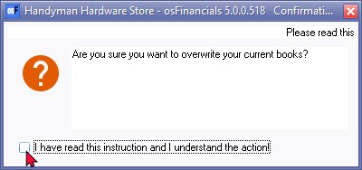
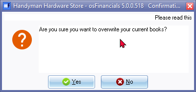
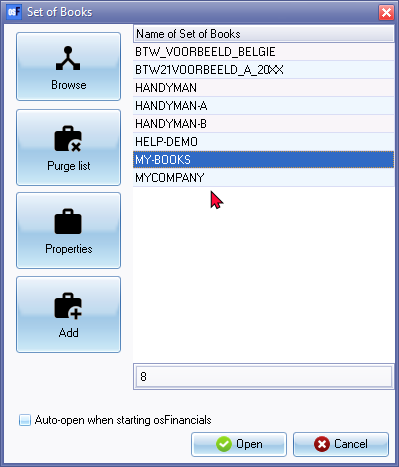
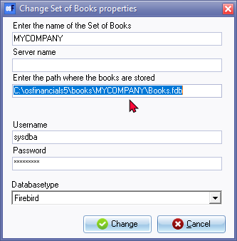

Copy from Set of Books
This option allows you to copy all the data from one Set of Books to another. By selecting this option, you replace all the existing data in the active Set of Books (opened Set of Books) with the data from the selected Set of Books.
The copying process includes copying settings, master files (such as accounts, debtors, creditors, and stock items), transactions in batches/journals (both posted and unposted), documents (both updated and not updated), budgets, repeating transactions, and more. Essentially, it duplicates the entire content of one Set of Books into another.
It's important to note that this feature overwrites any existing data in the target Set of Books. Therefore, you should exercise caution when using this option, as it can result in the loss of any data that was previously present in the target Set of Books.
By using the "Copy from a Set of Books?" option, you can create two identical Sets of Books on your system with the same data, reports, and other information. It can be useful when you want to create a backup or have multiple copies of a Set of Books for different purposes.
Remember to carefully review and verify your actions before proceeding with the copying process to ensure that you don't unintentionally overwrite or lose any important data.
|
|
If you want to create a new Set of Books, you can use the following options on the Start ribbon tab:
Both options provide ways to create new Sets of Books based on existing ones, either by making a direct copy or by saving a copy with a different name and/or location. These options help streamline the process of creating new Sets of Books and provide flexibility in managing your financial data. |

|
|
It's crucial to exercise caution and follow important precautions before using the "Copy from a Set of Books" feature in osFinancials. There are some potential risks involved in the copying process. Here are the precautions you should take:
By following these precautions, you can minimize the risks associated with the copying process and ensure the integrity and safety of your data. It's always wise to proceed with caution when performing any irreversible actions that can potentially overwrite or replace existing data. |

To copy data from another Set of Books:
- On the Setup ribbon, select Global processes → Copy from Set of Books. The following confirmation screen is displayed:

- If you are absolutely sure, tick the "I have read this instruction and understand the action!" field. The Yes and No buttons will be available on this screen.

- Click on the Yes button only if you are absolutely sure.
|
|
On this screen you have the last chance to cancel the clearing process. If you click on the No button, the process will be terminated. |

- Click on the Yes button to replace all the data in the open (active) Set of Books. The Set of Books screen (the same screen as the one to Open a Set of Books) is displayed:

|
|
If a Set of Books is not located in the .../books or other directory where osFinancials5 is installed, (elsewhere on your system) the name of the Set of Books is displayed in a blue colour. |

- Select the Set of Books which you would like to copy the data from.
|
|
If the Set of Books you need to copy from, is not listed on the Set of Books screen, click on the Browse icon to select from any other Directory. |
|
|
You may click on the Properties icon to view the holding Directory for the Set of Books selected on the list. If you click on the Properties icon, the following screen is displayed:  Once done, click on the Cancel button to close (exit) this screen. |
- Click on the Open button. All the data in the selected Set of Books will be imported (replace all existing data) into the Set of Books you are working in.
|
|
Once this process is finished, it is recommended that: -
|